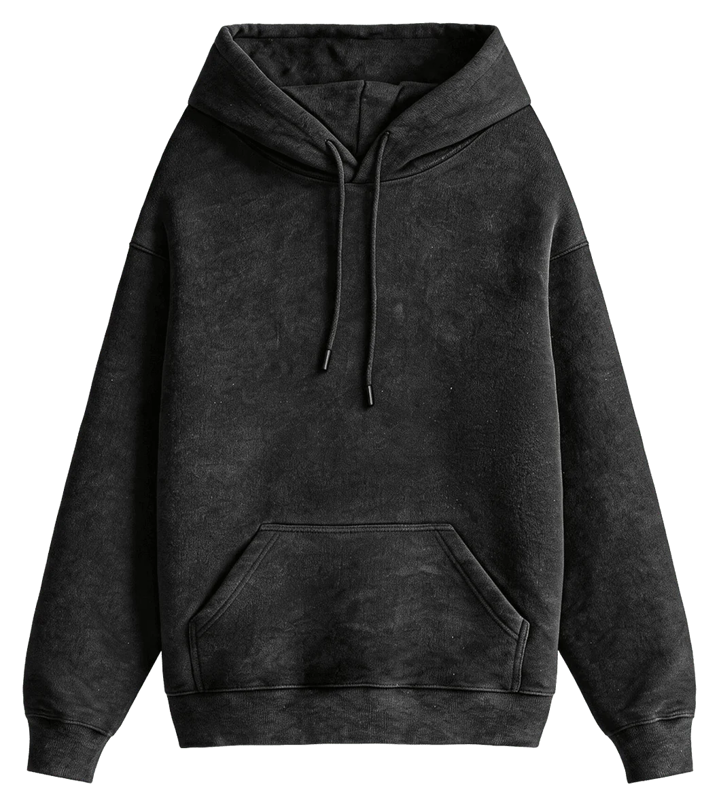
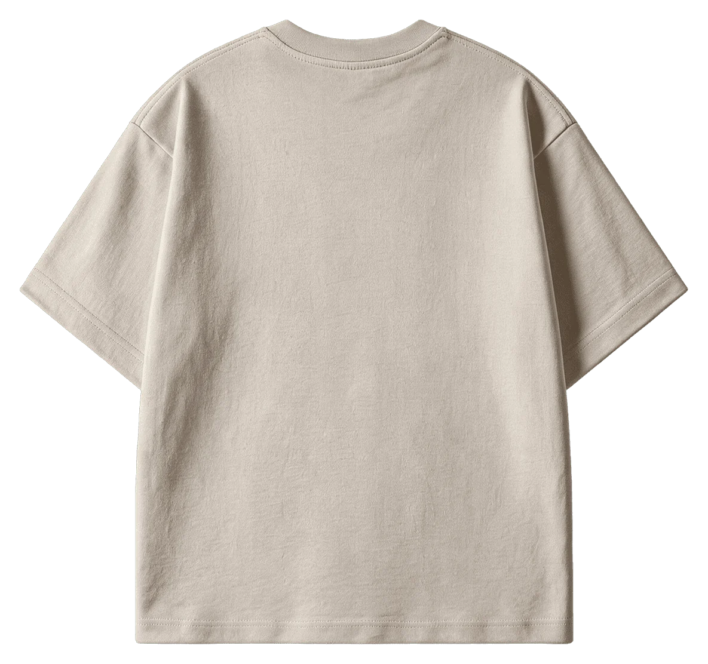
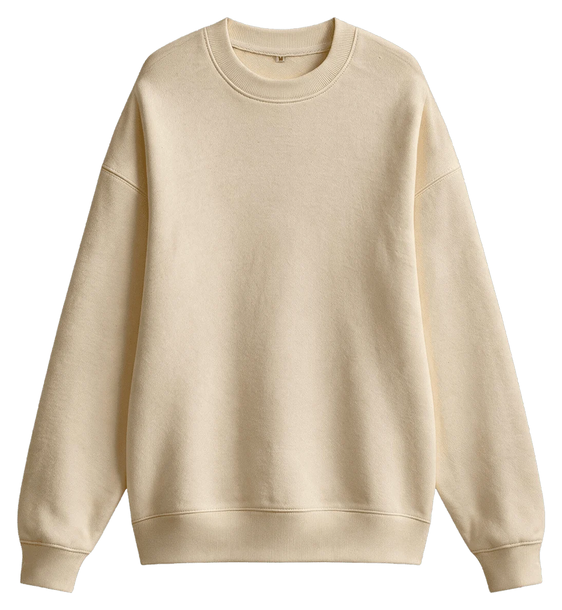
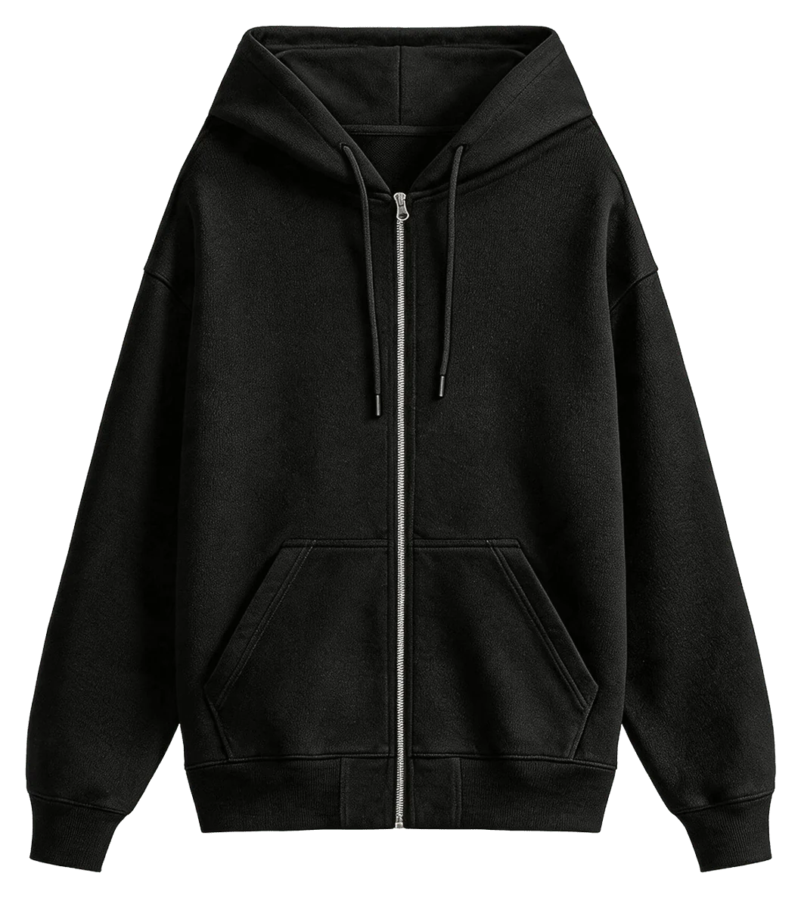

Производство для брендов
Берём на себя весь процесс — от идеи до готового тиража.

01Коллекция и мерч под ключ
Берём на себя весь процесс — от идеи до готового тиража. Работаем по прозрачной схеме: обсуждаем задачу, предлагаем решение, подбираем материалы, отшиваем образцы и запускаем производство. Не усложняем, но и не упрощаем там, где это влияет на результат.
Если у вас нет готового дизайна или чёткого понимания продукта — поможем собрать это вместе. Если всё уже есть — аккуратно реализуем без лишних правок. Наша задача — сделать так, чтобы мерч вашего проекта или коллекция бренда выглядели как полноценный продукт, который действительно хочется носить и покупать.

02Пошив изделий
Шьём на собственном производстве — без посредников, поэтому контролируем каждый этап. Работаем с трикотажем: футболки, худи, лонгсливы и другие базовые изделия.
В основе — наши лекала, которые мы долго тестировали и дорабатывали. Они дают стабильную посадку и предсказуемый результат в тираже. При необходимости адаптируем их под задачу, конструируем по образцу или разрабатываем модель с нуля.
Следим за деталями, которые формируют итоговое ощущение от вещи: как ведёт себя ткань, как ложится шов, как изделие выглядит после стирки.

03Печать на изделиях
Подбираем технологию печати под задачу, а не под то, что проще сделать. Учитываем тираж, макет, ткань и желаемый результат — и уже под это предлагаем решение.
Работаем с разными видами нанесения: шелкография, цифровая печать и DTF. У каждого — свой визуальный эффект и поведение в носке, и мы это учитываем заранее.
Важно не просто нанести изображение, а сделать так, чтобы оно органично выглядело на изделии и нормально жило в реальности: не трескалось и не выцветало.

04Вышивка на изделиях
Вышивка — это про аккуратность и тактильные ощущения. Рекомендуем ее использовать, когда нужно сделать продукт премиальнее.
Делаем как машинную, так и ручную вышивку — в зависимости от задачи. Настраиваем плотность, подбираем нити и тестируем на образцах, чтобы вышитое лого/изображение выглядело чисто и не деформировало изделие.
Хорошая вышивка не перетягивает ткань и не выглядит тяжёлой. Она просто становится частью вещи.
Как работаем
- РеференсФото, ссылка или эскиз. Для первого сообщения хватит референса, типа изделия и тиража.
- ОбразецЛекала и первая вещь на утверждение.
- ТиражШьём партию, наносим принт, отдаём в шоуруме или отправляем.
- Образец
- 5–7 дней
- Тираж
- от 14 дней
- Предоплата
- 50 %
- Нанесение
- от 1 шт
Для первого сообщения хватит референса, типа изделия и тиража.